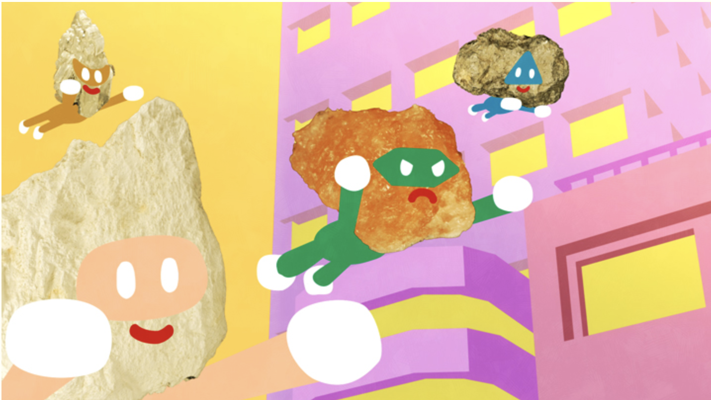

NHK の番組表
番組を検索
2件表示 / 2件
みんなうた「ごっつぉさま」／「超変身！ミネラルフォーマーズ」
NHK総合
2022年3月4日 午前4:35〜午前4:40（5分）

出演者ほか
記載なし
詳細
「ごっつぉさま」うた：須貝智郎／「超変身！ミネラルフォーマーズ」うた：鬼龍院翔ｆｒｏｍゴールデンボンバー
パラスポーツ×アニメ「アニ×パラ」▽パラアルペンスキーテーマ曲江口寿史×ＡＣＣ
NHK総合
2022年3月4日 午後11:05〜午後11:10（5分）
出演者ほか
【声】松本まりか，【出演】Ａｗｅｓｏｍｅ Ｃｉｔｙ Ｃｌｕｂ，【監督】西村一彦，【脚本】加納新太，【原案】江口寿史
詳細
パラスポーツの魅力をアニメで伝える番組。高速滑走に挑む精神力が試されるパラアルペンスキーを描く。キャラ原案：江口寿史／曲：Ａｗｅｓｏｍｅ Ｃｉｔｙ Ｃｌｕｂ